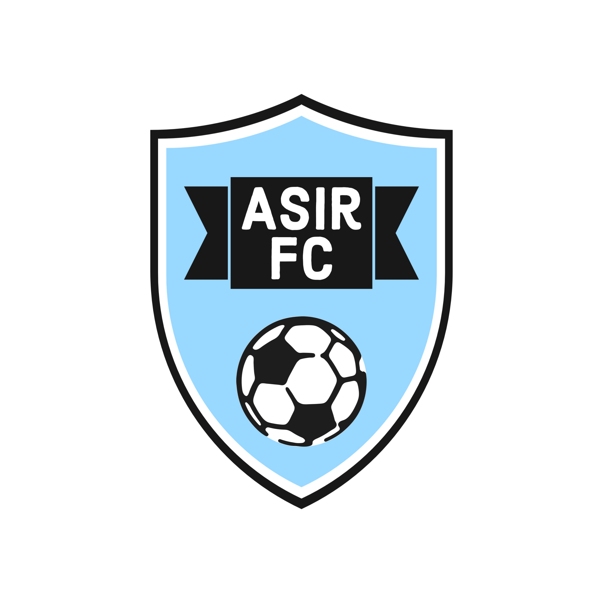

En el año 1915, Willam, un hombre muy avanzado a su época, estabá realizando un proyecto para la fabricación de los primeros ordenadores. Un día, obserbó por las calles de la Cartuja, como unos niños jugaban con un balón. Willman, que tambíen tenia una gran fantasia por este deporte, reunió a un grupo de amigos en un descampado en la Cartuja. Allí, Willman y sus amigos fundaron lo que hoy en día es ASIR FC. En un primer momento, comenzó a llamarse Willamn FC. El primer presidente del club fue un gran amigo de Willman, Don Jose Antonio Giraldo, con el que el club no creció mucho, ya que este apenas aparecía por las intalaciones.
Años más tarde, y esta vez con la llegada de Don Francisco Martos, hizo varios cambios para que el club llegara a ser algo en el mundo del fútbol. El paso más destacado es qe rejuveneció a gran parte de la plantilla, aunque, Willam, que ya tenia una edad considerable, seguía siendo el capitán que todos querían y amaban. El presidente del club, Don Francisco Martos, tuvo que hacer una tarea tremendamente complicada. Romper el contrato con el capitan Willam debido a varios resultados negativos y a una rebeldía del capitán pidiendo lecciones de Cisco Packet Tracer en el vestuario. Esta elección, le costó el cargo al presidente, y Willman, que ya no formaba parte del equipo que fundó, desapareció y no se supo nada más de él.Willman UNO DI NOI.

Un tiempo después, el club estaba casi al borde de la desaparición, por culpa de la guerra civil y postguerra. En esos momentos, los jugadores del Willam FC, diseñaron los primeros ordenadores que posteriormente se convertirán en los ordenadores que utilizamos diariamente. Todo un lujo. Muchos de los jugadores se hicieron expertos en redes, y junto a un cúmulo de circunstancias, reformularon el nombre del equipo, y en 1955, el club pasó a llamarse ASIR FC.
Una vez acabada la postguerra y con la posterior vuelta a la normalidad, un desconocido Don Bernat Costa cogío el mando de Asir FC en el que llegaron las épocas más gloriosas del club. D. Bernat trajo a futbolistas de talla mundial, tales como Switch, Mouse, Router, y la estrella, MySQL. D.Bernat, que le apasionaba mucho el baloncesto, no consiguió hacerse con los derechos de los que actualmente son los Lakers, pero, con el dinero que iba a inventir en ellos, construyó un estadio en el mismo descampado donde se fundó el equipo. El estadio pasaría a llamarse Willam Stadium. Bernat estuvo desde 1975-2000, en el que el club alcanzó primera division durante varios consecutivos, llegando incluso a la final de la Copa del Rey durante tres años seguidos, ganándola dos de ellas. A partir del año 2000, Bernat se fué a Cataluña para continuar con otro proyecto, mientras que ASIR FC bajó a segunda división en el que disputo casi 20 años consecutivos.

Parecía que el club nunca volvería a ser lo que era, pero, gracias al expresidente del Paris Sant-Germain, Don Jesus Crespo, cogió el club a punto de descender de división y lo ascendió a primera. Algunos dicen que el ascenso se dió en los despachos, otros dicen que fue en el terreno de juego... pero lo importante, es que ASIR FC es de primera. Este mismo año, Jesús tomó una importante desición. Trasladar ASIR FC al deseado Estadio Olimpico de la Cartuja de Sevilla. Esto ocasionó una polémica en la ciudad, ya que clubes como Sevilla FC o Real Betis se quejaron, ya que estos tenian más derecho a poseer dicho estadio por historia y títulos. Pero el Ayuntamiento quería apostar por un equipo con ambición, y más ambición que ASIR FC no lo hay.
.png)